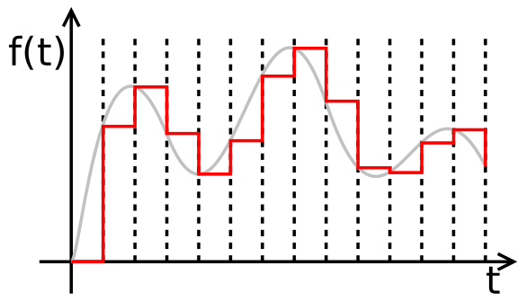

You're probably aware that when you're watching a movie you're actually watching a series of still photographs. Conventionally, 24 snapshots—also known as frames—are captured per second, and those are later played back (displayed one after the other) at a constant rate of 24 frames per second, the same rate at which the snapshots were taken. That means that the photos are shot at a rate of one every 1/24 of a second—which is to say every 0.041667 seconds, or every 41.667 milliseconds.
We think of the real world as being continuous. We think of time as a continuous flow, within which the objects in the world move (or don't) and change (or don't). We, and the rest of the world, move constantly forward in time. We can recall the past only with our memory, or with some sort of capture-and-storage mechanism such as a camera. With a camera we can, in effect, freeze time, by capturing and storing one instant as a still image. With a movie camera, we take 24 snapshots per second, and we can then replay the past by showing those photos at the same rate. Thus, with a series of discrete images, we can simulate the continuous flow of time.
Digital recording of sound works in much the same way, although we need to take many more than 24 snapshots of the sound per second. We use a microphone to transduce sound energy into an electrical signal. The voltage of that signal changes analogously to (proportionally to) the changing air pressure of the sound wave. At regular intervals, a computer can measure that voltage and represent it as a number, and store that number in memory. For accurate representation of sound, we need to take many thousands of measurements per second. For example, a CD recording uses a rate of 44,100 samples per second. Later we can read through those numbers at the same rate, and convert them back to voltages to drive a loudspeaker.
For this audio capture process, a circuit called a sample-and-hold is used.

The gray curve represents the continuously changing voltage of the input signal. The red indicates the discrete voltages that are sampled periodically and held constant until the next sample.
The sample-and-hold circuit periodically holds its input voltage constant, giving the computer time to measure the voltage and quantize it as a numerical value.
The result is an ordered file of numbers—in this case, 44,100 numbers per second of sound. Just as a movie shows us 24 still images per second, a digital recording reproduces 44,100 constant voltages per second. A filter circuit is used to smooth that signal, so that it effectively replicates the continuously changing voltage of the original sound signal.
Digital Audio, Christopher Dobrian
Computer Music: A Theoretical and Historical Approach, Phil Burk et al.
This page was last modified August 22, 2018 by Christopher Dobrian, dobrian@uci.edu.